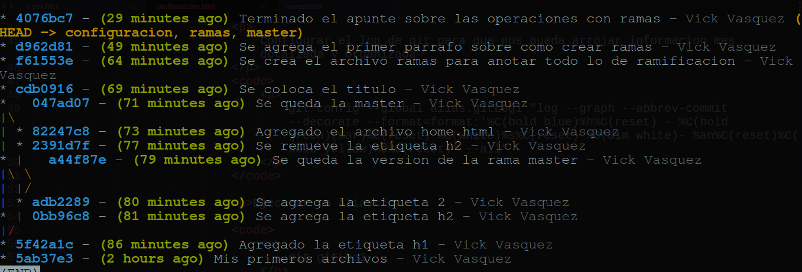
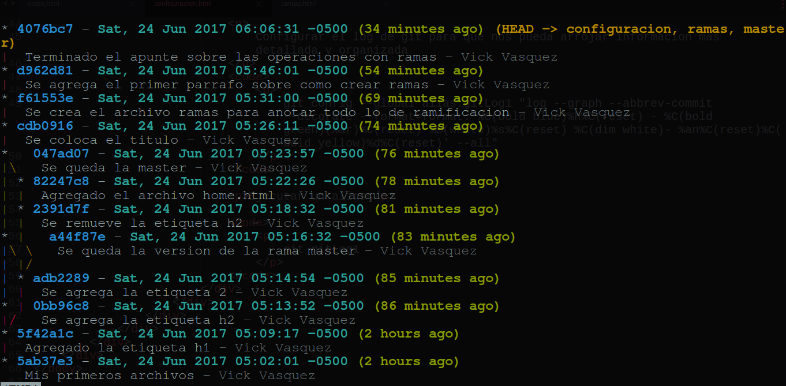
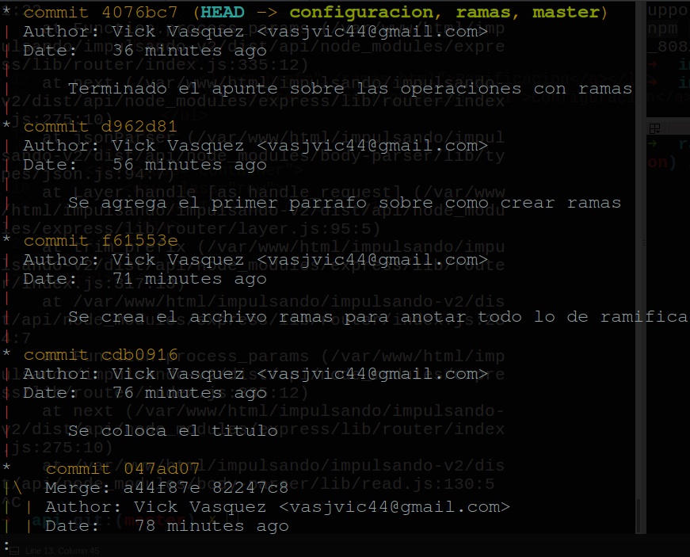
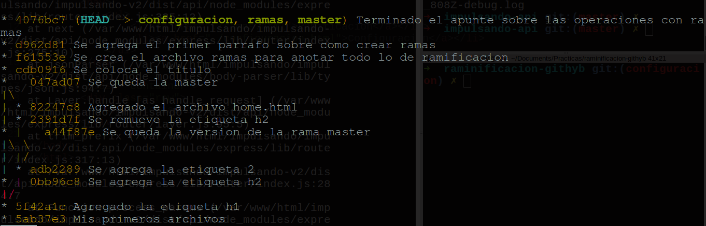

git config --global user.name "Nombre Apellidos"
git config --global user.email "email@example.com"
git config --global alias.nombreAlias "el alias de git"
Ejemplo
Configurar el log de git para que nos pueda arrojar informacion mas detallada y organizada
git config --global alias.gitLog1 "log --graph --abbrev-commit --decorate --format=format:'%C(bold blue)%h%C(reset) - %C(bold green)(%ar)%C(reset) %C(white)%s%C(reset) %C(dim white)- %an%C(reset)%C(bold yellow)%d%C(reset)' --all"
git config --global alias.log2 "log --graph --abbrev-commit --decorate --format=format:'%C(bold blue)%h%C(reset) - %C(bold cyan)%aD%C(reset) %C(bold green)(%ar)%C(reset)%C(bold yellow)%d%C(reset)%n'' %C(white)%s%C(reset) %C(dim white)- %an%C(reset)' --all"
git config --global alias.log3 "log --graph --abbrev-commit --decorate --date=relative --all"
git config --global alias.log4 "log --graph --oneline --decorate --all"
Ejecutar un alias
git log1

git log2

git log3

git log4
